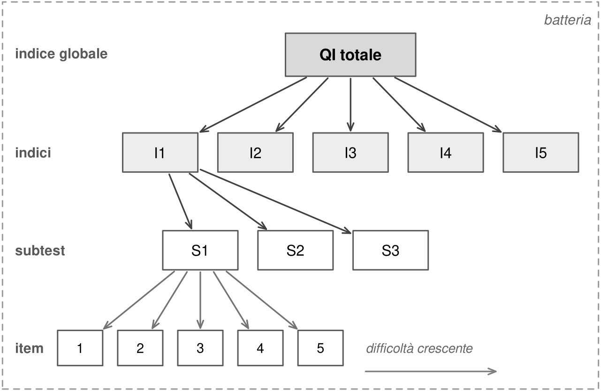
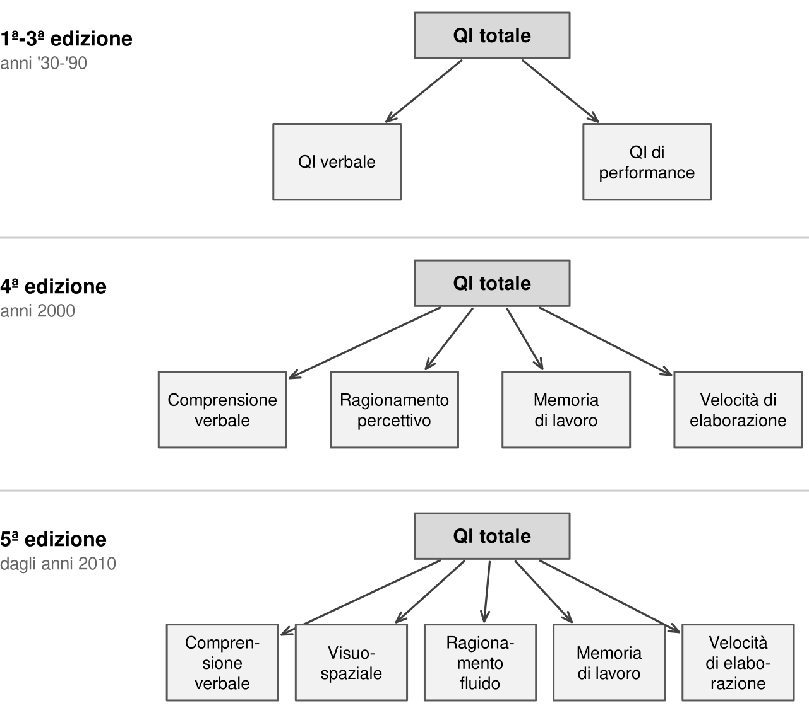

9 Le batterie moderne di intelligenza
Il QI che si legge oggi in un referto non ha quasi nulla in comune con il quoziente di Stern. Non è un rapporto fra età, non si basa su un’età mentale, e vale allo stesso modo a 8 e a 80 anni. È il risultato di una seconda rivoluzione nella storia dei test, iniziata alla fine degli anni Trenta in un ospedale psichiatrico di New York.
Questo capitolo descrive come sono costruite le batterie moderne, che cosa significano i loro punteggi e quali sono gli strumenti più diffusi. Non riproduce item di test commerciali: quando servono esempi, sono costruiti ad hoc per illustrare il tipo di prova, non equivalenti a item reali.
9.1 Un piccolo glossario
Il linguaggio dei test usa alcuni termini con un significato preciso.
- Batteria. Strumento completo per valutare un’area del funzionamento, come l’intelligenza, articolato in molte componenti. Per tradizione si parla spesso di «scale».
- Item. Il singolo problema all’interno di una prova. La risposta può essere giusta o sbagliata, oppure valutata su pochi livelli di accuratezza.
- Subtest. Una prova che misura una particolare abilità, di solito composta da una sequenza di item di difficoltà crescente. Esempi tipici sono un subtest di vocabolario o uno di costruzioni con cubi.
- Indice. Un punteggio che stima un costrutto latente aggregando più subtest, espresso su una metrica standardizzata. Il QI totale è un indice; lo sono anche gli indici di dominio, come comprensione verbale o memoria di lavoro.
9.2 Wechsler e il QI di deviazione
David Wechsler aveva lavorato da giovane alla somministrazione dei test dell’esercito statunitense. Negli anni Trenta era psicologo clinico al Bellevue Hospital di New York, dove doveva valutare adulti molto diversi per età, storia e sintomi: per stabilirne l’autonomia, la capacità di lavorare o di testimoniare, il bisogno di tutela, le possibilità di recupero. La Stanford-Binet non era adatta. Nel 1939 Wechsler pubblicò la Wechsler-Bellevue, la prima vera batteria clinica per adulti (Wechsler, 1939). Il campione di standardizzazione, circa 1.700 persone, era poco rappresentativo: per lo più newyorkesi, bianchi e con istruzione superiore alla media. Ma l’impianto era nuovo.
Le innovazioni erano due. La prima era l’equilibrio fra prove verbali e prove di performance, cioè non verbali, un’idea che riprendeva la distinzione fra Army Alpha e Army Beta. La batteria forniva un QI verbale, un QI di performance e un QI totale. Questa struttura è rimasta sostanzialmente invariata fino agli anni Novanta.
La seconda, più importante, era il QI di deviazione. Invece di confrontare età mentale e cronologica, Wechsler confrontava la prestazione di una persona con quella dei coetanei del campione normativo, e la esprimeva come distanza dalla loro media su una scala con media 100 e deviazione standard 15. È esattamente la logica dei punti z vista nel capitolo sulle distribuzioni. Il QI di deviazione funziona a ogni età e ha lo stesso significato in qualunque punto della vita: 115 indica sempre una deviazione standard sopra la media dei coetanei. Questa metrica è diventata universale ed è usata ancora oggi per quasi tutti i test psicologici.
Wechsler aveva un’ispirazione pragmatica e in fondo unitarista. Voleva anzitutto misurare bene il QI totale. Considerava i subtest misure diverse della stessa intelligenza, non misure di intelligenze diverse, e la divisione fra parte verbale e di performance solo uno dei modi possibili di raggrupparli (Wechsler, 1958). Gli bastava che la batteria funzionasse.
9.3 Dagli indici di Wechsler al CHC
Le scale Wechsler si sono moltiplicate e sono state riviste più volte: la WAIS per adulti, la WISC per l’età scolare, la WPPSI per l’età prescolare. WISC e WAIS sono oggi alla quinta edizione, la WPPSI alla quarta; le edizioni disponibili in Italia possono essere precedenti. Restano le batterie più usate al mondo per la valutazione cognitiva globale.
Nel tempo la struttura si è articolata. La distinzione fra QI verbale e QI di performance è stata sostituita, nelle edizioni degli anni Duemila, da quattro indici di ispirazione cognitiva e neuropsicologica: comprensione verbale, ragionamento percettivo, memoria di lavoro, velocità di elaborazione. Le quinte edizioni hanno separato il ragionamento percettivo in un indice visuospaziale e uno di ragionamento fluido, con un riferimento più esplicito al modello CHC. La Figura 9.2 riassume il passaggio.

Le convenzioni metriche sono ormai universali: i subtest hanno punteggi ponderati con media 10 e deviazione standard 3; gli indici, compreso il QI totale, media 100 e deviazione standard 15.
La struttura di una batteria come la WISC-V è dunque gerarchica: un QI totale, cinque indici primari, una decina di subtest principali e altri subtest supplementari. I principali tipi di prova sono questi.
| Indice | Che cosa valuta | Tipo di prova |
|---|---|---|
| Comprensione verbale | Conoscenza delle parole, dei concetti e del mondo | Spiegare che cosa hanno in comune due concetti; definire parole |
| Visuospaziale | Analisi di dettagli visivi e relazioni spaziali | Riprodurre un modello con cubi colorati; scegliere i pezzi che compongono una figura |
| Ragionamento fluido | Ragionamento induttivo e deduttivo, astrazione di regole | Completare matrici di figure; trovare ciò che bilancia una serie di pesi |
| Memoria di lavoro | Mantenere e manipolare informazioni verbali o visive | Ripetere sequenze di cifre in avanti, all’indietro o riordinate; riconoscere immagini viste |
| Velocità di elaborazione | Rapidità ed efficienza in compiti semplici | Associare simboli a cifre; cercare simboli bersaglio |
Un esempio originale chiarisce il tipo di richiesta senza riprodurre item reali. In una prova di somiglianze si potrebbe chiedere in che cosa si assomigliano una bussola e un orologio: entrambi sono strumenti che servono a orientarsi, uno nello spazio e l’altro nel tempo. La risposta richiede di trovare la categoria astratta che li accomuna, non di descriverli.
La struttura a cinque fattori delle scale Wechsler più recenti è stata contestata. Alcune rianalisi dei dati normativi trovano che quattro fattori di dominio, più un fattore generale molto forte, descrivano i dati altrettanto bene, e che la varianza specifica di molti indici sia modesta (Canivez et al., 2017). È lo stesso problema discusso nel capitolo sulla qualità della misura: i domini esistono, ma al netto di g pesano poco.
9.4 Leggere un profilo
Una batteria multicomponenziale restituisce molti numeri. La tentazione è leggerli tutti: un indice verbale di 112 e uno visuospaziale di 96 sembrano raccontare una storia. A volte la raccontano. Spesso, però, raccontano anche l’errore di misura.
Il QI totale è la stima più attendibile e stabile. Gli indici di dominio seguono in gran parte il fattore generale e, considerati da soli, sono meno attendibili: se si ripetesse la valutazione, la differenza fra due indici potrebbe ridursi o addirittura invertirsi. I singoli subtest, ancora meno affidabili, non vanno interpretati isolatamente. Il capitolo sulla qualità della misura ha mostrato perché.
Questo non significa che i profili siano inutili. Possono essere informativi quando la discrepanza è ampia, quando è coerente con altre informazioni sul caso e quando esiste un profilo atteso documentato per una certa condizione. In queste circostanze, per esempio, si può preferire un indice di abilità generale che escluda memoria di lavoro e velocità, se queste componenti sono compromesse per ragioni specifiche e rischiano di sottostimare il ragionamento. Ne riparleremo nel capitolo sulla valutazione nel neurosviluppo.
9.5 Le matrici di Raven e i test monocomponenziali
Accanto alle grandi batterie esiste una tradizione diversa, di origine britannica. John Raven, allievo di Spearman, voleva un test di ragionamento complesso per la ricerca, che non dipendesse da competenze verbali. Nel 1938 pubblicò le Standard Progressive Matrices: una serie di matrici di figure in cui manca un elemento, da scegliere fra diverse alternative in base a una regola da scoprire (Raven, 2000).
Durante la Seconda guerra mondiale l’esercito britannico le usò per lo screening di massa, grazie alla facilità di somministrazione collettiva, con scopi simili a quelli dei test statunitensi della guerra precedente. Seguirono una versione a colori per bambini, anziani e persone con difficoltà cognitive, nel 1947, e una versione avanzata per livelli di abilità elevati, nel 1962. Le matrici sono oggi considerate una misura tipica di intelligenza fluida e uno dei migliori singoli indicatori di g.
Test come le matrici di Raven o il Culture Fair Test di Cattell sono monocomponenziali: forniscono una sola stima del livello generale. Sono rapidi, spesso somministrabili in gruppo, e utili per la ricerca e lo screening. Furono presentati a lungo come «liberi dalla cultura». Nessun test lo è davvero: il formato a scelta multipla, la familiarità con figure astratte e con la logica delle prove scolastiche contano. Il capitolo sull’effetto Flynn mostrerà che proprio le matrici sono fra le prove più sensibili ai cambiamenti storici. Meglio parlare di test ridotti nella componente culturale.
9.6 Test equi?
L’accusa più antica ai test di intelligenza è che siano ingiusti verso alcuni gruppi. La storia raccontata nel capitolo precedente le dà più di una ragione. Ma la domanda va posta nei termini giusti. Nel linguaggio della psicometria un test è distorto (biased) quando lo stesso punteggio non ha lo stesso significato in gruppi diversi: perché a parità di abilità un gruppo ottiene punteggi più bassi in alcune prove, cioè manca l’invarianza di misura, oppure perché il punteggio prevede gli esiti in modo diverso nei due gruppi (Meredith, 1993). Una differenza fra le medie, da sola, non è prova di distorsione. Un termometro che segna temperature diverse a Palermo e a Bolzano non è per questo un termometro sbagliato.
Per gruppi che condividono lingua e scolarizzazione, le batterie moderne superano in genere queste verifiche: la struttura dei punteggi è la stessa e la loro capacità predittiva è simile (Warne, 2020). I problemi seri nascono quando lingua, scolarità e familiarità con le prove differiscono, cioè proprio nelle condizioni in cui fallirono i test dell’esercito statunitense. Le differenze medie fra gruppi definiti per etnia o nazionalità sollevano, oltre a queste, domande sulle cause a cui l’ereditabilità stimata dentro ciascun gruppo non può rispondere da sola; il caso del divario Nord-Sud discusso nel capitolo sulla scuola mostra quanto fragili possano essere i dati su cui si costruiscono certe conclusioni.
Il caso dei sessi è istruttivo. Nell’abilità generale le differenze medie fra maschi e femmine sono trascurabili; ne esistono alcune in abilità specifiche, come un vantaggio maschile nella rotazione mentale e uno femminile in alcune prove verbali e di velocità (Halpern et al., 2007). Va però ricordato che le batterie vengono costruite scartando gli item che funzionano in modo diverso nei due sessi, sicché l’uguaglianza dei totali è in parte una scelta di costruzione. Più solido è un altro risultato. Nell’intera coorte scozzese testata nel 1932, quasi tutti i bambini di undici anni, le medie erano praticamente uguali, ma la variabilità era maggiore fra i maschi, più numerosi in entrambe le code (Johnson et al., 2008).
Una spiegazione molto popolare delle differenze fra gruppi è la minaccia dello stereotipo: chi appartiene a un gruppo descritto come meno capace renderebbe peggio quando lo stereotipo viene evocato, per ansia o distrazione. L’idea è plausibile e ha avuto un enorme successo. Le evidenze sono più deboli della reputazione. Per le ragazze in matematica, una meta-analisi ha trovato un effetto piccolo, con segni di pubblicazione selettiva (Flore & Wicherts, 2015); e gli effetti si riducono ancora negli studi che riproducono le condizioni di una valutazione reale (Shewach et al., 2019). È una traiettoria che il capitolo sul potenziamento cognitivo mostrerà più volte: un risultato elegante, studi piccoli, una letteratura che si ridimensiona quando arrivano i campioni grandi.
9.7 Il panorama italiano e le tendenze recenti
Oltre alle scale Wechsler, in Italia sono disponibili diversi strumenti. Alcune batterie multicomponenziali, come la IDS-2, sono costruite esplicitamente sul modello CHC e coprono anche aree diverse dall’intelligenza in senso stretto, come funzioni esecutive e competenze scolastiche. Esistono batterie brevi, con pochi subtest, che stimano in modo rapido e robusto il QI totale; strumenti interamente non verbali, anche nelle istruzioni, utili per chi ha difficoltà linguistiche o per alcune condizioni del neurosviluppo; test monocomponenziali di ragionamento fluido per l’età evolutiva o per la selezione del personale. Un elenco ragionato, con caratteristiche e limiti di ciascuno, è nella sezione del sito dedicata alla professione.
Due tendenze stanno cambiando il settore. La prima è la diffusione di modelli psicometrici più avanzati della teoria classica, come la teoria della risposta all’item, che stima l’abilità tenendo conto delle caratteristiche di ciascun item. Su questa base si costruiscono test adattivi computerizzati, che scelgono l’item successivo in funzione delle risposte già date e raggiungono una stima precisa con meno domande. La seconda è il passaggio allo scoring tramite piattaforme online. È comodo, ma crea un problema nuovo: quando le tabelle normative non sono pubblicate, il professionista non può verificare come il punteggio grezzo sia stato trasformato (Frinco et al., 2024; Zanon & Priftis, 2025). Un numero ottenuto da una procedura opaca è difficile da difendere, in clinica come in tribunale.
9.8 Uno strumento, non un oracolo
Le batterie moderne sono il risultato di un secolo di correzioni. La metrica di deviazione ha eliminato i difetti del QI di rapporto. La struttura gerarchica permette di stimare sia il livello generale sia i domini. La standardizzazione su campioni ampi rende i confronti più equi. Restano però limiti che nessuna revisione elimina del tutto: l’errore di misura, la debolezza degli indici specifici, la dipendenza dalla lingua e dalla scolarità, la necessità di norme aggiornate e trasparenti. Una batteria ben usata fornisce una stima solida; che cosa quella stima significhi per la persona valutata non lo dice il manuale.